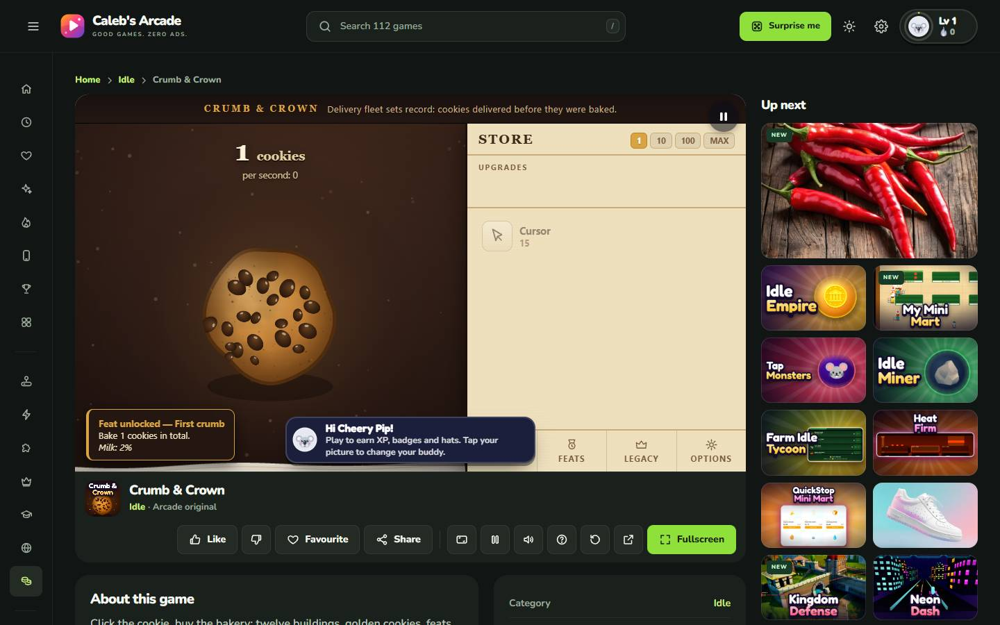
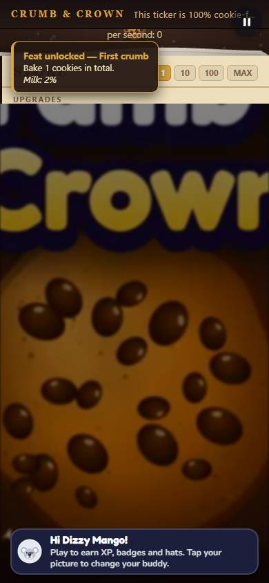
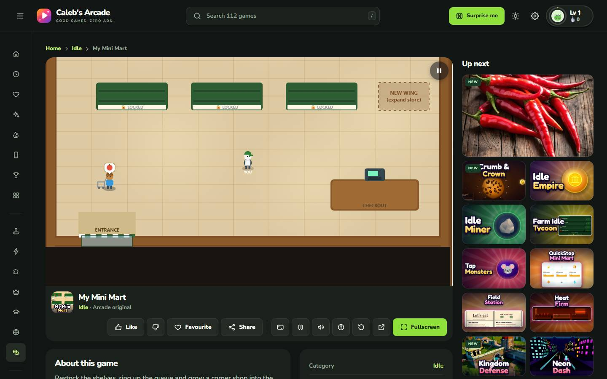
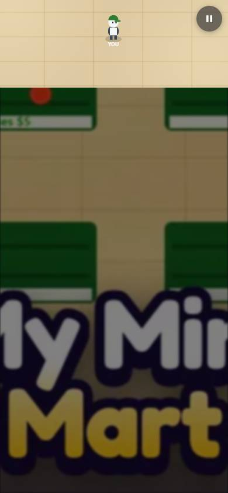

2 games, desktop and phone. 4 checks. {"interaction-observed":4}
Interaction observed means visible text changed after input. This is smoke coverage, not proof of full game completion. Canvas-only gameplay needs visual review. Microphone, network and hardware-dependent features can remain unverified.
Full machine-readable evidence
| Game | Viewport | Result | Evidence |
|---|---|---|---|
| Crumb & Crown | desktop | interaction-observed | Actions and screenshotClicked portal Play → Tapped canvas centre/lower play area → Pressed Enter → Pressed ArrowRight → Pressed Space → Pressed ArrowLeft → Pressed ArrowUp → Pressed w → Pressed d  |
| Crumb & Crown | phone | interaction-observed | Actions and screenshotClicked portal Play → Tapped canvas centre/lower play area → Pressed Enter → Pressed ArrowRight → Pressed Space → Pressed ArrowLeft → Pressed ArrowUp → Pressed w → Pressed d  |
| My Mini Mart | desktop | interaction-observed | Actions and screenshotClicked portal Play → Canvas covered by menu; pointer action skipped → Pressed Enter → Pressed ArrowRight → Pressed Space → Pressed ArrowLeft → Pressed ArrowUp → Pressed w → Pressed d  |
| My Mini Mart | phone | interaction-observed | Actions and screenshotClicked portal Play → Canvas covered by menu; pointer action skipped → Pressed Enter → Pressed ArrowRight → Pressed Space → Pressed ArrowLeft → Pressed ArrowUp → Pressed w → Pressed d  |